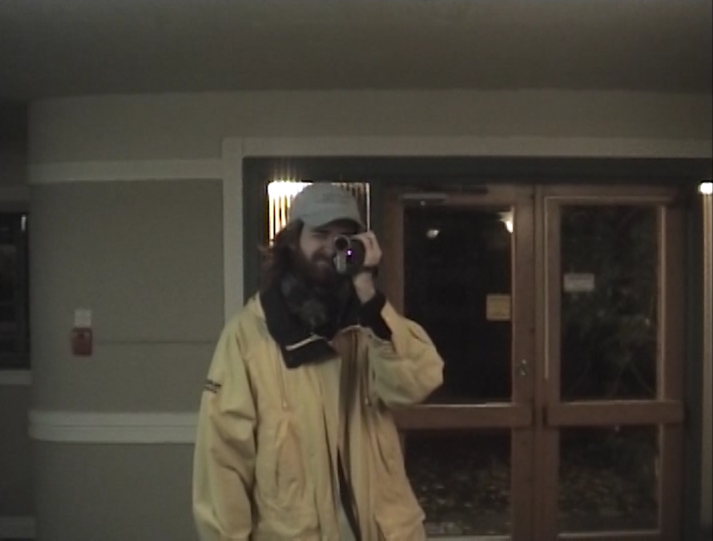

|  |
Mackenzie J.A. Reid Rostad (b. 1995) is a Canadian documentary filmmaker with a practice of participatory and site-specific explorations of love and concrete.
Recent exhibitions include; DOXA Documentary Film Festival, Vancouver, Canada (2017); VIVO Media Arts Centre, Vancouver, Canada (2019); Visions du Réel, Nyon, Switzerland (2020).
mackenzie.reid.rostad [ at ] gmail.com |